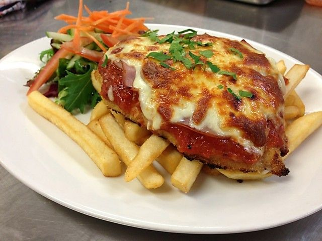

Chicken Parmagiana

Description
Oven baked Chicken Parmesan is simple to make and worth every minute!
If you love a crispy crumb coating vs a soggy crumb, look no further!
The best you will ever make!
Ingredients
- 1 Cup Panko Breadcrumbs
- 3 Garlic Cloves
- 1/4 Cup Plain Flour
- 1 Egg
- 2 Chicken Breasts, halved horizontally
- 700g Tomato Passata
- 2 Tablespoons Chopped Fresh Basil
Steps
- Combine rind, garlic and oregano in a large shallow bowl.
- Add breadcrumbs. Season with salt and pepper. Mix well. Place flour in a bowl. Whisk egg and milk in a separate shallow bowl.
- Working with 1 chicken piece at a time, toss in flour. Dip in egg mixture, then press in breadcrumb mixture to coat. Transfer to a plate.
- Heat 2 tablespoons oil in a large frying pan over medium-high heat. Cook chicken for 4 to 5 minutes each side or until golden. Transfer to a plate.
- Heat remaining oil in pan. Add onion. Cook, stirring, for 5 minutes or until softened. Add extra garlic.
- Cook for 1 minute or until fragrant. Stir in passata and basil. Season. Bring to a simmer. Simmer for 3 to 4 minutes or until slightly thickened.
- Preheat grill on medium-high. Spoon half the passata mixture onto a baking tray. Top with chicken. Spoon over remaining passata mixture. Top chicken with mozzarella and parmesan.
- Grill for 4 to 5 minutes or until cheese is melted and golden. Stand for 2 minutes. Top with extra basil. Serve with salad leaves.